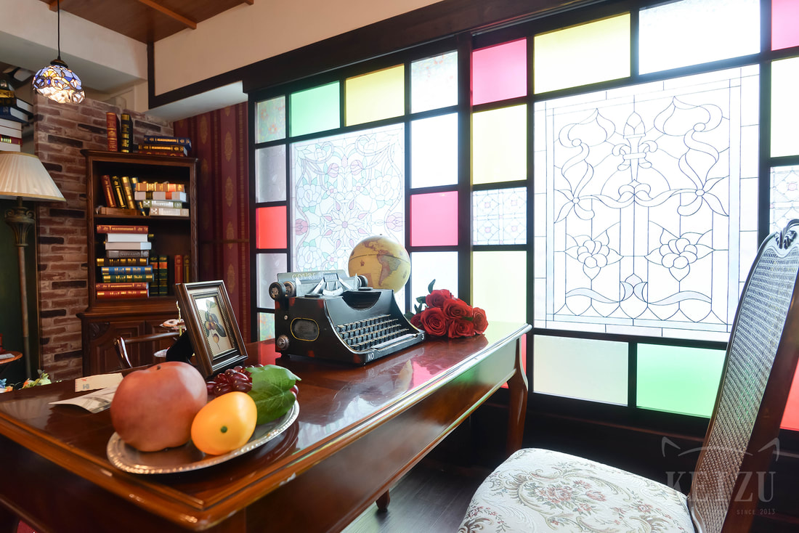
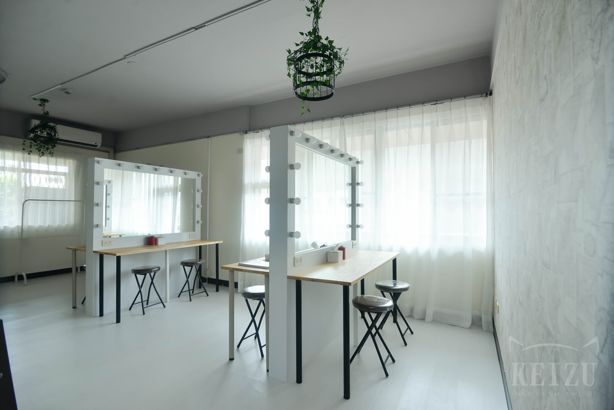
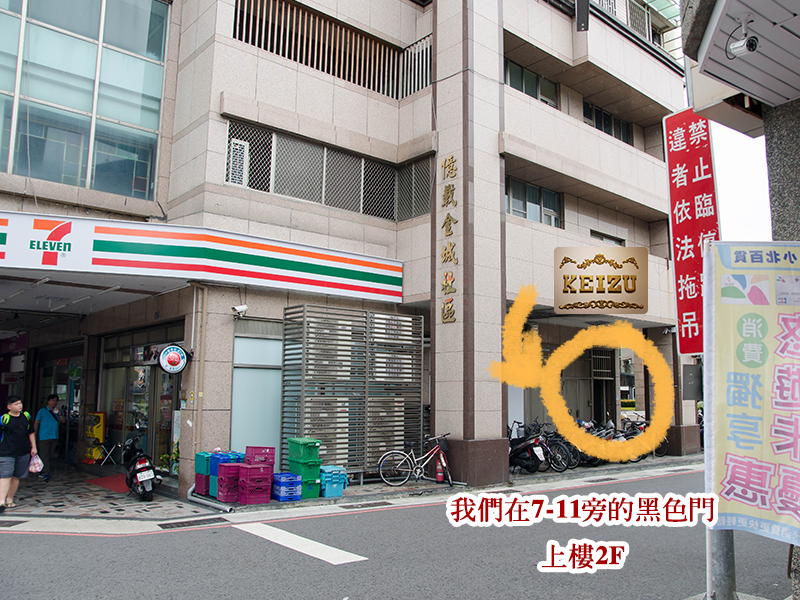

ABOUT
舒適、好拍——雖然尚在努力中，但這是我們堅持的準則。
凱茲攝影部算是因著學院長及學院長二哥的願望誕生的。一開始學院長自己實在沒信心可以和線上幾個非常棒的攝影棚把棚景用的這麼漂亮，後來憑著一股熱血，凱茲攝影部的企劃就此誕生。
棚景的選擇，一開始很快就選定了「大正時代」及「遊廓」兩個主題，其他棚景則是從大量想做的主題中，挑選現階段比較做得到的，成果出來其實真的蠻喜歡的！雖然真實度還是差了一截，但未來希望可以慢慢接近現實場景會有的樣子。
我們可能和以往商攝專用的棚相比，佈景沒有這麼豐富，但我們真正想提供給大家的是放鬆的空間跟服務。希望你來到這裡，也能感受到我們的用心。
— 2018 學院長 筆

STUDIO SCENES
2F 設有舒適的梳妝室空間、以及精心打造的主題棚景；3F 則走自然亮色系，提供多樣不同拍攝需求。點選棚景查看實拍照片與注意事項。
PRICING
ＫＺ棚採【共棚制】，全棚景可拍，只要進場的人頭都算一個人數。
適用 3～6 人入場
$900／HR／一組6人
每增一人 +$250／HR
適用 1～2 人入場
$400／HR／1人
不分平假日
依【人數＋毛小孩】總數量計價
$800／HR／2位
$900／HR／3～6位
整棟攝影棚全包，不對外開放共棚
$2,500／HR／15人（平日）
第16人以上每增一人 +$250／HR
高中社團優惠
滿 15 人以上
方可申請，請洽客服人員詢問
HOW TO BOOK
凱茲攝影部的預約以 Facebook／Instagram 私訊為主，確認並完成付款後，再至下方連結填寫預約表單，即完成保留時段的所有步驟。
請於 Facebook 或 Instagram 私訊詢問想預約的時間＆人數，待確認無誤後 staff 會給您匯款資訊。
若之前來拍攝有打卡金 100 元，請私訊時主動告知，因打卡人數眾多，本棚不會主動折抵。
請選擇［全額付款］或［訂金 500 元］，匯款後請私訊回覆匯款姓名及後五碼。
付款完成後才可以填寫下方預約表單，未付款填表無效。①私訊報價 ②付款 ③填表單，依序保留，請於付款期限內完成，逾時預約不成立。
填表後 1～2 日可至下方「預約狀態」日曆查詢，日曆上出現您的暱稱＝預約成功。
最早進場時間為 9:00，最晚開始撤場時間 19:00。
可在預約前 30 分進棚整裝，結束後 30 分撤裝。若需更早進場化妝換衣，可加購梳妝室加時服務，退場換裝時間亦可加時延長。
※若下單預約即代表您已看過且同意所有網站內須知。
※攝影棚預約無法享有購物官網的購物金折扣。
SCHEDULE
日曆上顯示暱稱，即代表該時段已被預約。完成付款＋填表後，1～2 個工作天內會更新至日曆上。
＊＊寵物友善、禁止全裸拍攝＊＊
NOTICES
寵物友善攝影棚，費用與計價方式請見上方「費用說明」。
如無法配合，可能無法入場拍攝請注意。
為共創友好的拍攝環境，請了解並遵守以下規則：
違反規定者：將現場格式化所有拍攝影像，且不退費離場並列入黑名單。
預約注意
場勘須知
若同一天有兩個相近時段的預約，且前一場離場與後一場梳妝的間隔在 1 小時以內，兩個時段中若有重複出現的「model／被拍攝者」，將以兩組中較高的方案價格，現場向該重複者加收差額。
若重複出現的身份是攝影師或單純陪同者（本人並非被拍攝的 model），則不需要補差額。
HOW TO FIND US
Google 地圖在這裡的定位常會偏差兩三間店面，導航到達後請不要直接相信地圖上的紅點，改認明下方實景照片，才不會找錯門口。
